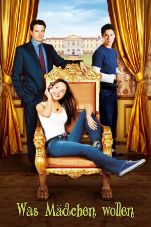
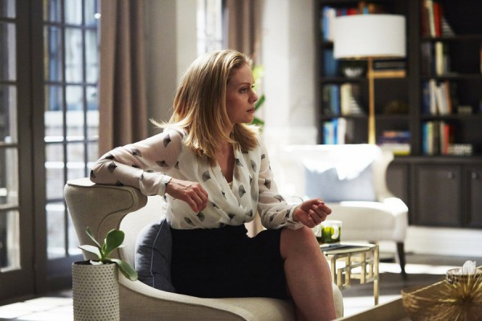
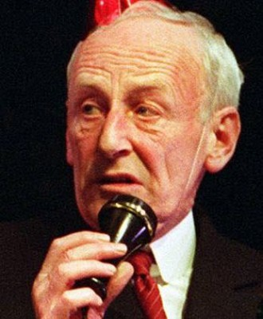
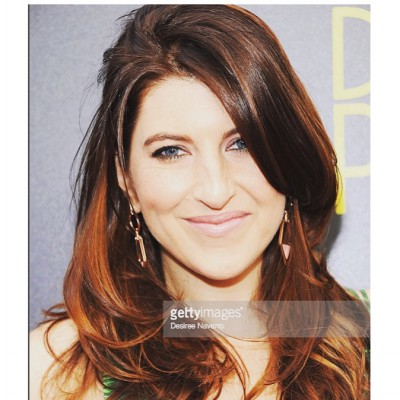

#5247 Was Mädchen wollen
Alternativ: What a Girl Wants
 
 IMDB-Wertung: 5.8 / 10
IMDB-Wertung: 5.8 / 10  Metascore: 0
Metascore: 0 
Die 17-jährige Daphne hat scheinbar alles, was sich ein amerikanisches Mädchen nur wünschen kann. Das Einzige, was ihr fehlt, ist ihr Vater und den will sie kennen lernen. Kurz entschlossen reist Daphne nach London, um ihn aufzusuchen. Dort entdeckt sie, dass er der bekannte Politiker Lord Henry Dashwood ist. Henry hatte von seiner Vaterschaft keine Ahnung, nimmt aber seine Tochter bei sich auf. Die beiden verstehen sich auf Anhieb prächtig, doch die englische High Society ist schockiert über Daphnes unkonventionelles Benehmen. Mit ihrem ungestümen Temperament mischt sie die steife britische Gesellschaft kräftig auf. Jede Menge kritische Situationen sind da natürlich vorprogrammiert....
Jahr: 2003
Dauer: 96 Minuten
FSK: 0
Land: USA Studio: Warner Bros.Tonspuren:
Untertitel:
Auflösung: 1080p (1920x800) Größe: 5263 MB
Genre: Drama, Komödie, Familie, Liebe
Regisseur: Dennie Gordon
Drehbuch: Michael Cody
Soundtrack:
Darsteller:
 Amanda Bynes als Daphne Reynolds
Amanda Bynes als Daphne Reynolds Colin Firth als Henry Dashwood
Colin Firth als Henry Dashwood Kelly Preston als Libby Reynolds
Kelly Preston als Libby Reynolds Eileen Atkins als Jocelyn Dashwood
Eileen Atkins als Jocelyn Dashwood Anna Chancellor als Glynnis Payne
Anna Chancellor als Glynnis Payne Jonathan Pryce als Alistair Payne
Jonathan Pryce als Alistair Payne- Oliver James als Ian Wallace
-  Christina Cole als Clarissa Payne
- Sylvia Syms als Princess Charlotte
-  James Greene als Percy
 Stanley Townsend als Bride's Father
Stanley Townsend als Bride's Father Raffaello Degruttola als Groom
Raffaello Degruttola als Groom-  Tara Summers als Noelle
- Nita Mistry als Girl in Hostel
- Ben Scholfield als Armistead Stuart
- Charlie Beall als Rufus
- Natalie Bromley als Jane
- Stephanie Lane als Fiona
- Bruno Tonioli als Fashion Emcee
 Roger Ashton-Griffiths als Lord Orwood
Roger Ashton-Griffiths als Lord Orwood David Gyasi als Ian's Band Member
David Gyasi als Ian's Band Member Daniel Tuite als Newspaper Reporter #1
Daniel Tuite als Newspaper Reporter #1 Victoria Wicks als Henry's Secretary
Victoria Wicks als Henry's Secretary Flaminia Cinque als Caterer
Flaminia Cinque als Caterer- Judy Collins als Dancer
- Tommie Grabiec als Butler , uncredited
 Tina Simmons als Henry Dashwood's Housekeeper , uncredited
Tina Simmons als Henry Dashwood's Housekeeper , uncredited- Soleil McGhee als Young Daphne
- Peter Reeves als Sir John Dashwood
- Steven Osborne als Staff Member
- Mike Toller als Libby's Band Member
- Tom Penn als Libby's Band Member
- Tom Goodfellow als Libby's Band Member
- James Bell als Libby's Band Member
- Mindy Lee Raskin als Bride
- Newton Boothe als Taxi Driver
- Pieter Vodden als Sven
- Steven Anderson als Television Reporter
- James Woolley als Political Advisor One
- James Linton als Political Advisor Two
- Jonah Russell als Policeman
- Ella Desmond Oakley als Baby Daphne
- Peter Hugo als Prince Charles
- Matthew Turpin als Prince William
- Chris Castle als Prince Harry
- Tom Harper als Edward
 Anthony Carrick als Prince Michael
Anthony Carrick als Prince Michael- Neville Phillips als Butler
- Cassie Powney als Peach Orwood
- Connie Powney als Pear Orwood
Datei: X:\2003(N-Z)\Was Mädchen wollen (2003, FSK0, 1920x800).mkv seit 04.01.2017
Festplatte: HD 2003-2004-2005(A-F)
 Es gibt insgesamt 46 Filme in der Gruppe '2003(N-Z)'
Es gibt insgesamt 46 Filme in der Gruppe '2003(N-Z)'